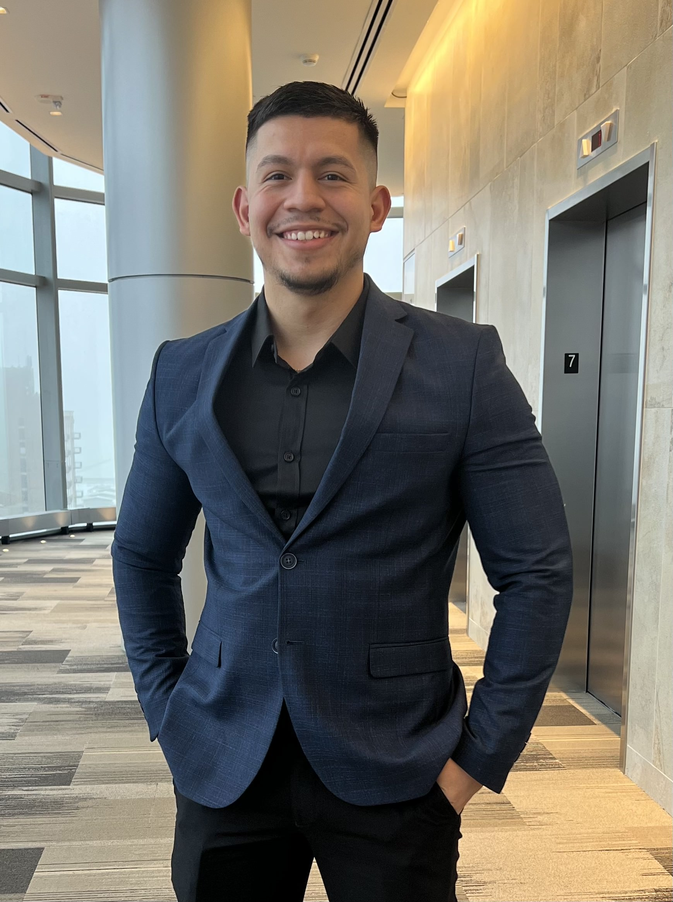

Portfolio
With a highly adaptable skillset and demonstrated willingness to learn and operationalize new processes, as well as navigate unfamiliar situations, my quick thinking and precise attention to detail have gotten me far as a professional and a human.
Some of my traits include Strong communication skills, Ability to connect and talk to clients, Confidence, Work Great Under Pressure, Extraordinary Problem Solver, and Innovative.
Skills include Leadership, Collaboration, Delegation, Forecasting, Strategic thinking, Teamwork, Time management, Project Planning, Task management, Organization, Critical Thinking, Adaptability. .

From the discipline I had to achieve in varsity wrestling where I recieved many medals and achievement awards, to my College class in Highschool, I can say withough a doubt Highschool was about handling business with no shortage of issues to resolve. What I don't miss are the obstacles I had to go through just to get to school, but at the end it was all worth it and it is what molded me.
In Highschool despite all the other activities or classes I could've joine, I signed up to be a guinea pig to a class where 2nd part of our day we were bussed to College of Lake County's Technology Compass and participated in a class worth 30% of our grade. Here I learned the fundamentals of Engineering formulas, Experimential mathamatics, and came in top of my class when it came to troubleshooting.
After many years of being an great Electrician I though it was time to move forward in my Career. I enrolled University of Phoenix's Beachelor of Science In Computer Science Degree and after a lot of hard work, time, and dedication I made it onto the Deans list.
In this class by Codecademy I learned the fundamentals of Python and how to open, view, and edit data within.
In this class by Codecademy I learned the fundmentials of Python and how to open, view, and edit data within. Including how to Query Data from a Database, and aggregate function.
Present
Learning
Data Scentist: Machine Learning Career Path
Currently enrolled in a Machine Learning class, I am working on it daily alongside many projects. This is a simple screenshot of the most recent modules completed.